Create a CI/CD Pipeline with Gatsby.js, Netlify and Travis CI
Updated by Linode Contributed by Linode
What is Gatsby?
Gatsby is a Static Site Generator for React built on Node.js. Gatsby uses a modern web technology stack based on client-side Javascript, reusable APIs, and prebuilt Markdown, otherwise known as the JAMstack. This method of building a site is fast, secure, and scalable. All production site pages are prebuilt and static, so Gatsby does not have to build HTML for each page request.
What is the CI/CD Pipeline?
The CI/CD (continuous integration/continuous delivery) pipeline created in this guide is an automated sequence of events that is initiated after you update the code for your website on your local computer. These events take care of the work that you would otherwise need to perform manually: previewing your in-development site, testing your new code, and deploying it to your production server. These actions are powered by GitHub, Netlify, and Travis CI.
NoteThis guide uses GitHub as your central Git repository, but you can use any service that is compatible with Netlify and Travis.
Netlify
Netlify is a PaaS (Platform as a Service) provider that allows you to quickly deploy static sites on the Netlify platform. In this guide Netlify will be used to provide a preview of your Gatsby site while it is in development. This preview can be shared with different stakeholders for site change approvals, or with anyone that is interested in your project. The production version of your website will ultimately be deployed to a Linode, so Netlify will only be used to preview development of the site.
Travis CI
Travis CI is a continuous integration tool that tests and deploys the code you upload to your GitHub repository. Travis will be used in this guide to deploy your Gatsby site to a Linode running Ubuntu 18.04. Testing your website code will not be explored in depth, but the method for integrating unit tests will be introduced.
The CI/CD Pipeline Sequence
This guide sets up the following flow of events:
You create a new branch in your local Git repository and make code changes to your Gatsby project.
You push your branch to your GitHub repository and create a pull request.
Netlify automatically creates a preview of the site with a unique URL that can be shared.
Travis CI automatically builds the site in an isolated container and runs any declared tests.
When all tests pass, you merge the PR into the repository’s master branch, which automatically triggers a deployment to your production Linode.
Before You Begin
Follow the Getting Started guide and deploy a Linode running Ubuntu 18.04.
Complete the Securing Your Server guide to create a limited Linux user account with
sudoprivileges, harden SSH access, and remove unnecessary network services.Note
This guide is written for a non-root user. Commands that require elevated privileges are prefixed with
sudo. If you’re not familiar with thesudocommand, visit our Users and Groups guide.All configuration files should be edited with elevated privileges. Remember to include
sudobefore running your text editor.Configure DNS for your site by adding a domain zone and setting up reverse DNS on your Linode’s IP.
Create a GitHub account if you don’t already have one. GitHub is free for open source projects.
Install Git on your local computer. Later in this guide, Homebrew will be used to install Gatsby on a Mac, so it’s recommended that you also use Homebrew to install Git if you’re using a Mac.
Prepare Your Production Linode
Install NGINX
Install NGINX from Ubuntu’s repository on your Linode:
sudo apt install nginx
Configure NGINX
Delete the default welcome page:
sudo rm /etc/nginx/sites-enabled/defaultCreate a site configuration file for Gatsby. Replace
example.comin the file name and in the file’s contents with your domain name:- /etc/nginx/conf.d/example.com.conf
-
1 2 3 4 5 6 7 8 9 10 11server { listen 80; server_name example.com; #charset koi8-r; #access_log /var/log/nginx/host.access.log main; location / { root /usr/share/nginx/html/example.com/public; index index.html index.htm; } }
Note
Replace all future instances ofexample.comin this guide with your domain name.The
rootdirective in your NGINX configuration points to a directory namedpublicwithin/usr/share/nginx/html/example.com/. Later in this guide, Gatsby will be responsible for creating thepublicdirectory and building its static content within it (specifically, via thegatsby buildcommand).The
/usr/share/nginx/html/example.com/directory does not exist on your server yet, so create it:sudo mkdir -p /usr/share/nginx/html/example.com/The Gatsby deployment script that will be introduced later in this guide will run under your limited Linux user. Set your limited user to be the owner of the new document root directory. This ensures the deployment script will be able write your site’s files to it:
sudo chown $(whoami):$(id -gn) -R /usr/share/nginx/html/example.com/Test your NGINX configuration for errors:
sudo nginx -tReload the configuration:
sudo nginx -s reloadNavigate to your Linode’s domain or IP address in a browser. Your Gatsby site files aren’t deployed yet, so you should only see a 404 Not Found error. Still, this error indicates that your NGINX process is running as expected.
Develop with Gatsby on Your Local Computer
You will develop with Gatsby on your local computer. This guide walks through creating a simple sample Gatsby website, but more extensive website development is not explored, so review Gatsby’s official documentation afterwards for more information on the subject.
Install Gatsby
This section provides instructions for installing Gatsby via Node.js and the Node Package Manager (npm) on Mac and Linux computers. If you are using a Windows PC, read Gatsby’s official documentation for installation instructions.
Install npm on your local computer. If you are running Ubuntu or Debian on your computer, use
apt:sudo apt install nodejs npmIf you have a Mac, use Homebrew:
brew install nodejs npmEnsure Node.js was installed by checking its version:
node --versionInstall the Gatsby command line:
sudo npm install --global gatsby-cli
Create a Gatsby Site
Gatsby uses starters to provide a pre-configured base Gatsby site that you can customize and build on top of. This guide uses the Hello World starter. On your local computer, install the Hello World starter in your home directory (using the name
example-sitefor your new project) and navigate into it:gatsby new example-site https://github.com/gatsbyjs/gatsby-starter-hello-world cd ~/example-siteInspect the contents of the directory:
lsYou should see output similar to:
LICENSE node_modules package.json package-lock.json README.md srcThe
srcdirectory contains your project’s source files. This starter will include the React Javascript component filesrc/pages/index.js, which will be mapped to our example site’s homepage.Gatsby uses React components to build your site’s static pages. Components are small and isolated pieces of code, and Gatsby stores them in the
src/pagesdirectory. When your Gatsby site is built, these will automatically become your site’s pages, with paths based on each file’s name.Gatsby offers a built-in development server which builds and serves your Gatsby site. This server will also monitor any changes made to your
srcdirectory’s React components and will rebuild Gatsby after every change, which helps you see your local changes as you make them.Open a new shell session (in addition the one you already have open) and run the Gatsby development server:
cd ~/example-site gatsby developThe
gatsby developcommand will display messages from the build process, including a section similar to the following:You can now view gatsby-starter-hello-world in the browser. http://localhost:8000/Copy and paste the
http://localhost:8000/URL (or the specific string displayed in your terminal) into your web browser to view your Gatsby site. You should see a page that displays “Hello World”.In your original shell session, view the contents of your
example-sitedirectory again:lsLICENSE node_modules package.json package-lock.json README.md src publicYou should now see a
publicdirectory which was not present before. This directory holds the static files built by Gatsby. Your NGINX server will serve the static files located in thepublicdirectory.Open the
src/pages/index.jsfile in your text editor, add new text between the<div>tags, and save your change:- src/pages/index.js
-
1 2 3import React from "react" export default () => <div>Hello world and universe!</div>
Navigate back to your browser window, where the updated text should automatically appear on the page.
Version Control Your Gatsby Project
In the workflow explored by this guide, Git and GitHub are used to:
- Track changes you make during your site’s development.
- Trigger the preview, test, and deployment functions offered by Netlify and Travis.
The following steps present how to initialize a new local Git repository for your Gatsby project, and how to connect it to a central GitHub repository.
Open a shell session on your local computer and navigate to the
example-sitedirectory. Initialize a Git repository to begin tracking your project files:git initStage all the files you’ve created so far for your first commit:
git add -AThe Hello World starter includes a
.gitignorefile. Your.gitignoredesignates which files and directories to ignore in your Git commits. By default, it is set to ignore any files in thepublicdirectory. Thepublicdirectory’s files will not be tracked in this repository, as they can be quickly rebuilt by anyone who clones your repository.Commit all the Hello World starter files:
git commit -m "Initial commit"Navigate to your GitHub account and create a new repository named
example-site. After the repository is created, copy its URL, which will have the formhttps://github.com/your-github-username/example-site.git.In your local computer’s shell session, add the GitHub repository as your local repository’s
origin:git remote add origin https://github.com/your-github-username/example-site.gitVerify the
originremote’s location:git remote -vorigin https://github.com/your-github-username/example-site.git (fetch) origin https://github.com/your-github-username/example-site.git (push)Push the master branch of your local repository to the origin repository:
git push origin masterView your GitHub account in your browser, navigate to the
example-siterepository, and verify that all the files have been pushed to it successfully: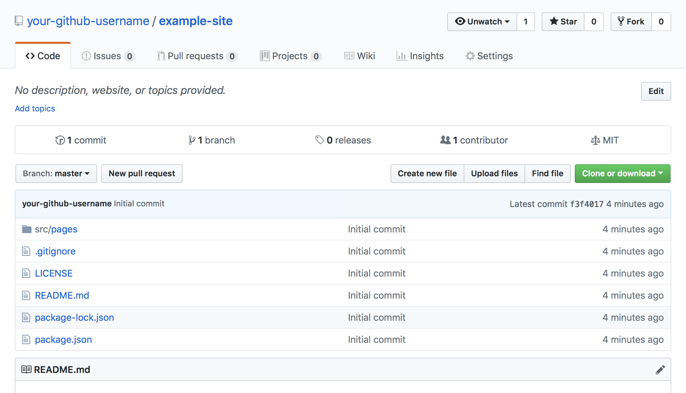
Preview Your Site with Netlify
In the course of developing a website (or any other software project), a common practice when you’ve finished a new feature and would like to share it with your collaborators is to create a pull request (also referred to as a PR). A pull request is an intermediate step between uploading your work to GitHub (by pushing the changes to a new branch) and later merging it into the master branch (or another release or development branch, according to your specific Git workflow).
Once connected to your GitHub account, the Netlify service can build a site preview from your PR’s code every time you create a PR. Netlify will also regenerate your site preview if you commit and push new updates to your PR’s branch while the PR is still open. A random, unique URL is assigned to every preview, and you can share these URLs with your collaborators.
Connect Your GitHub Repository to Netlify
Navigate to the Netlify site and click on the Sign Up link:
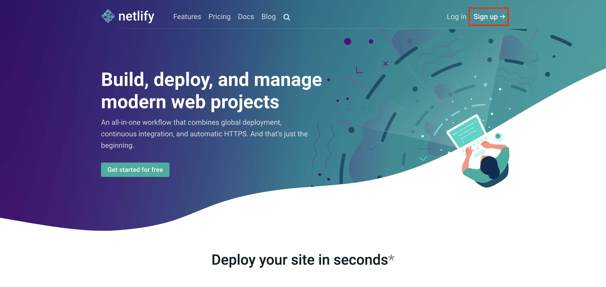
Click on the GitHub button to connect your GitHub account with Netlify. If you used a different version control service, select that option instead:
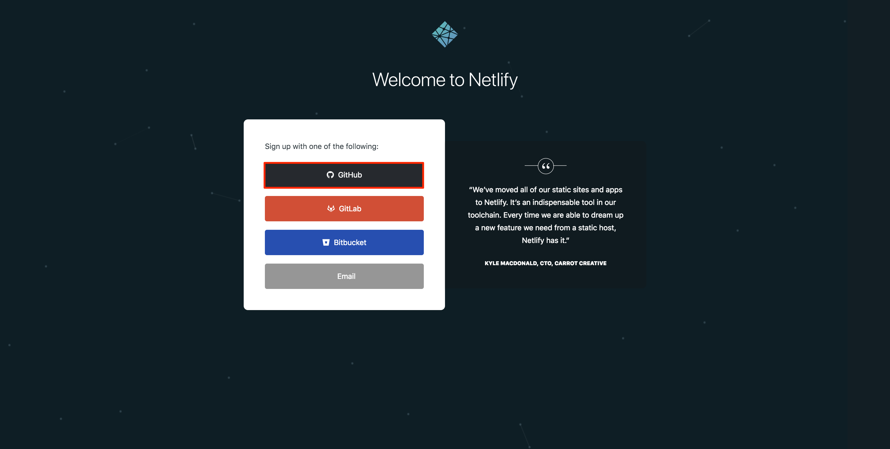
You will be taken to the GitHub site and asked to authorize Netlify to access your account. Click on the Authorize Netlify button:
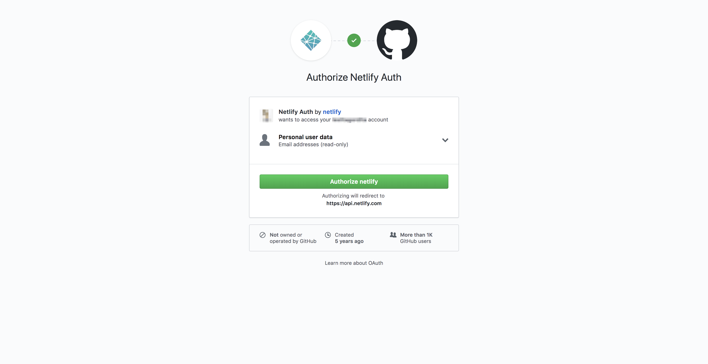
Add your new site to Netlify and continue along with the prompts to finish connecting your repository to Netlify. Be sure to select the GitHub repository created in the previous steps:
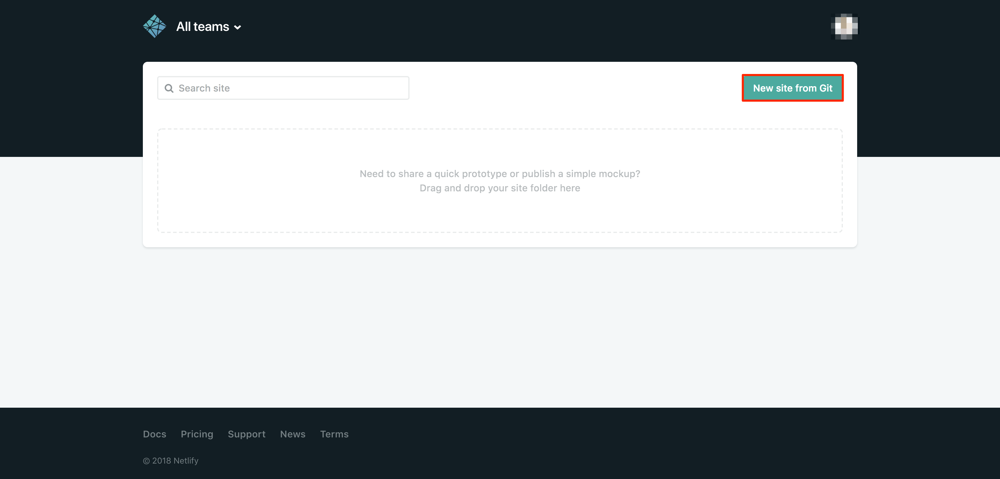
Provide the desired deploy settings for your repository. Unless you are sure you need to change these settings, keep the Netlify defaults:
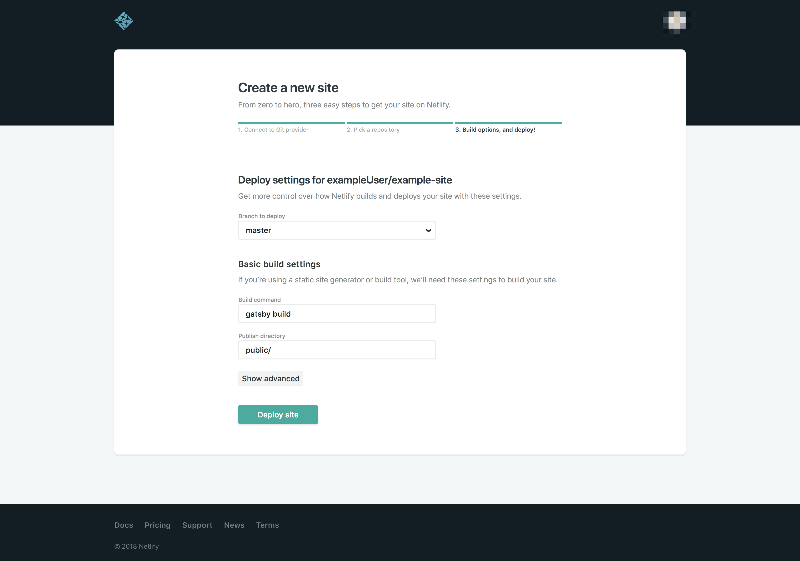
Note
You can add anetlify.tomlconfiguration file to your Git repository to define more deployment settings.
Create a Pull Request
In your local Git repository, create a new branch to test Netlify:
git checkout -b test-netlifyOn your computer, edit your
src/pages/index.jsand update the message displayed:- src/pages/index.js
-
1 2 3import React from "react" export default () => <div>Hello world, universe, and multiverse!</div>
Commit those changes:
git add . git commit -m "Testing Netlify"Push the new branch to the origin repository:
git push origin test-netlifyNavigate to the
example-siterepository in your GitHub account and create a pull request with thetest-netlifybranch: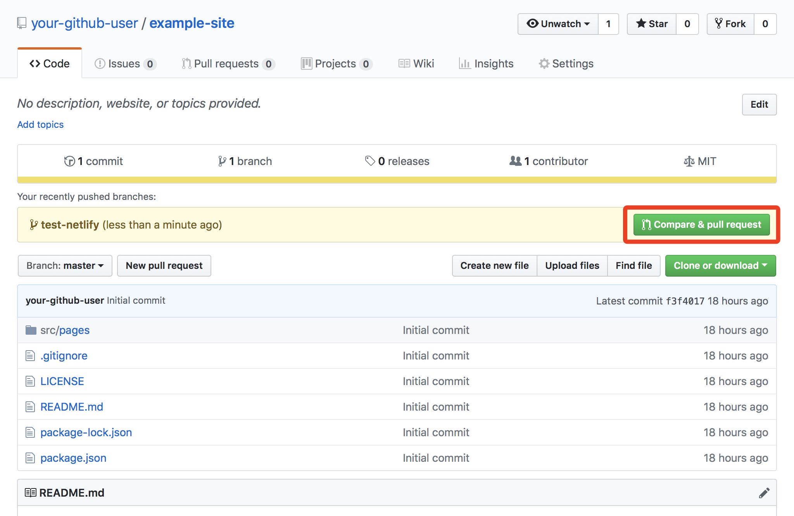
After you create the pull request, you will see a deploy/netlify row with a Details link. The accent color for this row will initially be yellow while the Netlify preview is being built. When the preview’s build process is finished, this row will turn green. At that point, you can click on the Details link to view your Gatsby site’s preview.
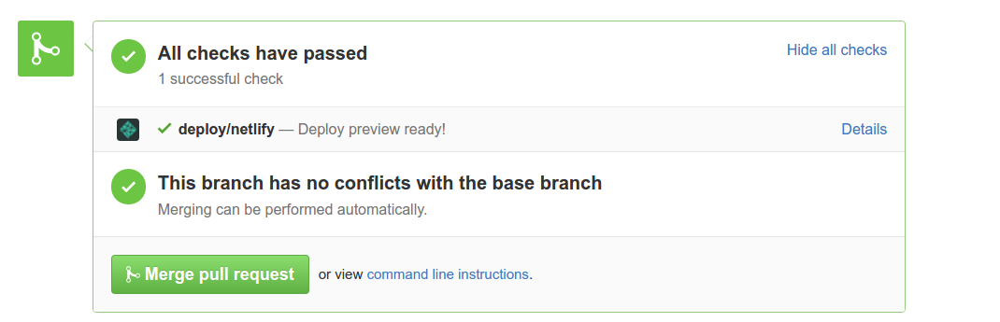
Every time you push changes to your branch, Netlify will provide a new preview link.
Test and Deploy Your Site with Travis CI
Travis CI manages testing your Gatsby site and deploying it to the Linode production server. Travis does this by monitoring updates to your GitHub repository:
Travis’s tests will run when a pull request is created, whenever new commits are pushed to that pull request’s branch, and whenever a branch is updated on your GitHub repository in general (including outside the context of a pull request).
Travis’s deployment function will trigger whenever a pull request has been merged into the master branch (and optionally when merging into other branches, depending on your configuration).
Connect Your GitHub Repository to Travis CI
Navigate to the Travis CI site and click on the Sign up with GitHub button.
Note
Be sure to visit travis-ci.com, not travis-ci.org. Travis originally operated travis-ci.com for paid/private repositories, and travis-ci.org was run separately for free/open source projects. As of May 2018, travis-ci.com supports open source projects and should be used for all new projects. Projects on travis-ci.org will eventually be migrated to travis-ci.com.You will be redirected to your GitHub account. Authorize Travis CI to access your GitHub account:
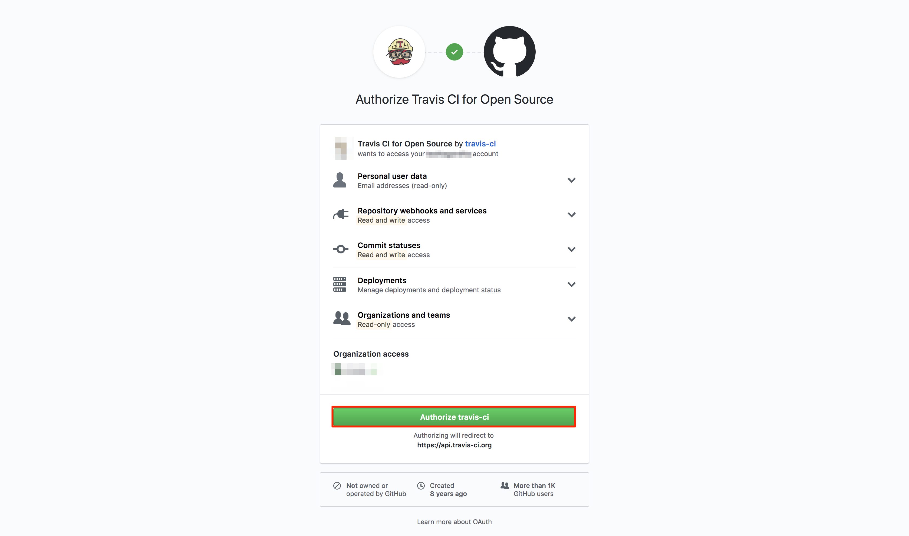
You will be redirected to your Travis CI account’s page where you will be able to see a listing of all your public repositories. Click on the toggle button next to your Gatsby repository to activate Travis CI for it.
Configure Travis CI to Run Tests
Travis’s functions are all configured by adding and editing a .travis.yml file in the root of your project. When .travis.yml is present in your project and you push a commit to your central GitHub respository, Travis performs one or more builds.
Travis builds are run in new virtualized environments created for each build. The build lifecycle is primarily composed of an install step and a script step. The install step is responsible for installing your project’s dependencies in the new virtual environment. The script step invokes one or more bash scripts that you specify, usually test scripts of some kind.
Navigate to your local Gatsby project and create a new Git branch to keep track of your Travis configurations:
git checkout -b travis-configsCreate your
.travis.ymlfile at the root of the project:touch .travis.ymlNote
Make sure you commit changes at logical intervals as you modify the files in your Git repository.Open your
.travis.ymlfile in a text editor and add the following lines:- ~/example-site/.travis.yml
-
1 2 3 4 5 6language: node_js node_js: - '10.0' dist: trusty sudo: false
This configuration specifies that the build’s virtual environment should be Ubuntu 14.04 (also known as trusty).
sudo: falseindicates that the virtual environment should be a container, and not a full virtual machine. Other environments are available.Gatsby is built with Node.js, so the Travis configuration is set to use
node_jsas the build language, and to use the latest version of Node (10.0at the time of this guide’s publication). When Node is specified as the build language, Travis automatically sets default values for theinstallandscriptsteps:installwill runnpm install, andscriptwill runnpm test. Other languages, like Python, are also available.The Gatsby Hello World starter provides a
package.jsonfile, which is a collection of metadata that describes your project. It is used by npm to install, run, and test your project. In particular, it includes adependenciessection used bynpm install, and ascriptssection where you can declare the tests run bynpm test.No tests are listed by default in your starter’s
package.json, so open the file with your editor and add atestline to thescriptssection:- package.json
-
1 2 3 4 5 6 7 8 9 10 11 12 13 14 15{ "name": "gatsby-starter-hello-world", "description": "Gatsby hello world starter", "license": "MIT", "scripts": { "develop": "gatsby develop", "build": "gatsby build", "serve": "gatsby serve", "test": "echo 'Run your tests here'" }, "dependencies": { "gatsby": "^1.9.277", "gatsby-link": "^1.6.46" } }
This entry is just a stub to illustrate where tests are declared. For more information on how to test your Gatsby project, review the unit testing documentation on Gatsby’s website. Jest is the testing framework recommended by Gatsby.
View Output from Your Travis Build
Commit the changes you’ve made and push your
travis-configsbranch to your origin repository:git add . git commit -m "Travis testing configuration" git push origin travis-configsView your GitHub repository in your browser and create a pull request for the
travis-configsbranch.Several rows that link to your Travis builds will appear in your new pull request. When a build finishes running without error, the build’s accent color will turn green:
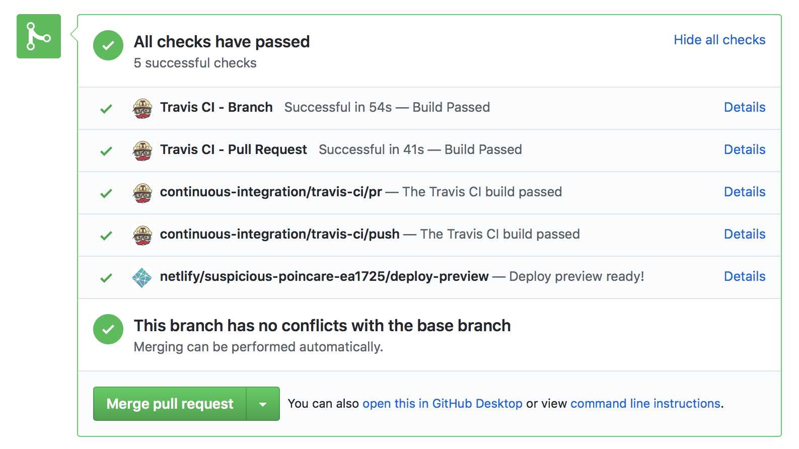
Note
Four rows for your Travis builds will appear, which is more than you may expect. This is because Travis runs your builds whenever your branch is updated, and whenever your pull request is updated, and Travis considers these to be separate events.
In addition, the rows prefixed by
Travis CI -are links to GitHub’s preview of those builds, while rows prefixed withcontinuous-integration/travis-ci/are direct links to the builds on travis-ci.com.For now, these builds will produce identical output. After the deployment functions of Travis have been configured, the pull request builds will skip the deployment step, while the branch builds will implement your deployment configuration.
Click the Details link in the
continuous-integration/travis-ci/pushrow to visit the logs for that build. A page with similar output will appear: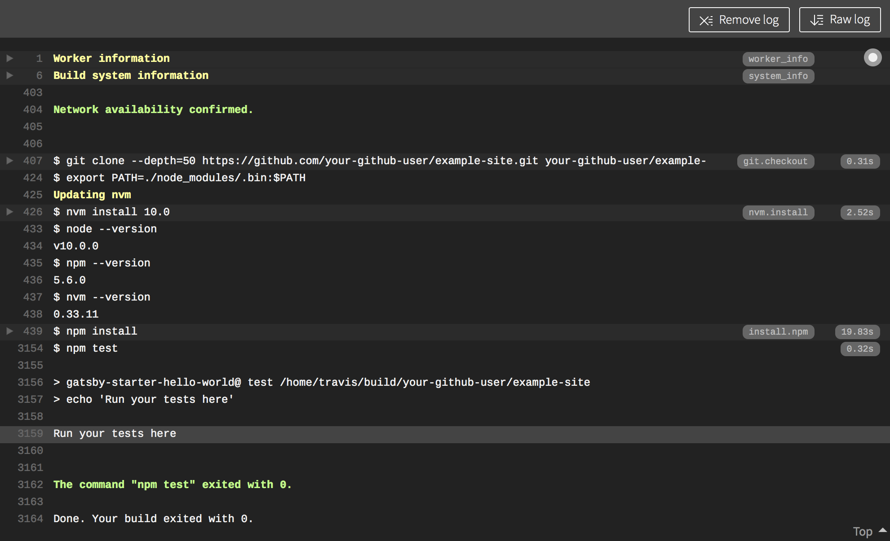
Towards the end of your output, you should see the “Run your tests here” message from the test stub that you entered in your
package.json. If you implement testing of your code with Jest or another library, the output from those tests will appear at this location in your build logs.If any of the commands that Travis CI runs in the
scriptstep (or in any preceding steps, likeinstall) returns with a non-zero exit code, then the build will fail, and you will not be able to merge your pull request on GitHub.For now, do not merge your pull request, even if the builds were successful.
Give Travis Permission to Deploy to Your Linode
In order to let Travis push your code to your production Linode, you first need to give the Travis build environment access to the Linode. This will be accomplished by generating a public-private key pair for your build environment and then uploading the public key to your Linode. Your code will be deployed over SSH, and the SSH agent in the build environment will be configured to use your new private key.
The private key will also need to be encrypted, as the key file will live in your Gatsby project’s Git repository, and you should never check a plain-text version of it into version control.
Install the Travis CLI, which you will need to generate an encrypted version of your private key. The Travis CLI is distributed as a Ruby gem:
On Linux:
sudo apt install ruby ruby-dev sudo gem install travisOn macOS:
sudo gem install travisOn Windows: Use RubyInstaller to install Ruby and the Travis CLI gem.
Log in to Travis CI with the CLI:
travis login --comFollow the prompts to provide your GitHub login credentials. These credentials are passed directly to GitHub and are not recorded by Travis. In exchange, GitHub returns a GitHub access token to Travis, after which Travis will provide your CLI with a Travis access token.
Note
Inside the root of your local
example-siteGit repository, create ascriptsdirectory. This will hold files related to deploying your Gatsby site:mkdir scriptsGenerate a pair of SSH keys inside the
scriptsdirectory. The key pair will be named gatsby-deploy so that you don’t accidentally overwrite any preexisting key pairs. Replaceyour_email@example.comwith your email address. When prompted for the key pair’s passphrase, enter no passphrase/leave the field empty:ssh-keygen -t rsa -b 4096 -C "your_email@example.com" -f scripts/gatsby-deployTwo files will be created:
gatsby-deploy(your private key) andgatsby-deploy.pub(your public key).Add the location of the
gatsby-deployfile to your project’s.gitignorefile. This will ensure that you do not accidentally commit the secret key to your central repository:- .gitignore
-
1 2 3# Other .gitignore instructions # [...] scripts/gatsby-deploy
Encrypt your private key using the Travis CLI:
cd scripts && travis encrypt-file gatsby-deploy --add --comYou should now see a
gatsby-deploy.encfile in your scripts directory:lsgatsby-deploy gatsby-deploy.enc gatsby-deploy.pubThe
--addflag from the previous command also told the Travis CLI to add a few new lines to your.travis.ymlfile. These lines decrypt your private key and should look similar to the following snippet:- .travis.yml
-
1 2 3before_install: - openssl aes-256-cbc -K $encrypted_9e3557de08a3_key -iv $encrypted_9e3557de08a3_iv -in gatsby-deploy.enc -out gatsby-deploy -d
 About the openssl command and Travis build variables
About the openssl command and Travis build variables
The second line (starting with
-in gatsby-deploy.enc) is a continuation of the first line, and-inis an option passed to theopensslcommand. This line is not its own item in thebefore_installlist.The
opensslcommand accepts the encryptedgatsby-deploy.encfile and uses two environment variables to decrypt it, resulting in your originalgatsby-deployprivate key. These two variables are stored in the Settings page for your repository on travis-ci.com. Any variables stored there will be accessible to your build environment: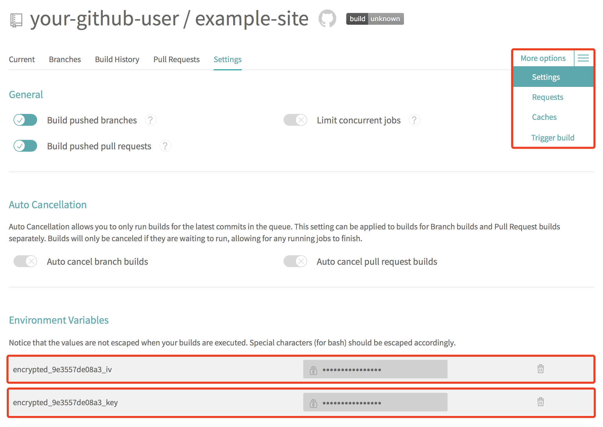
Edit the lines previously added by the
travis encrypt-filecommand so thatgatsby-deploy.encandgatsby-deployare prefixed with yourscripts/directory:- .travis.yml
-
1 2 3before_install: - openssl aes-256-cbc -K $encrypted_9e3557de08a3_key -iv $encrypted_9e3557de08a3_iv -in scripts/gatsby-deploy.enc -out scripts/gatsby-deploy -d
Continue preparing the SSH agent in your build environment by adding the following lines to the
before_installstep, after theopensslcommand. Be sure to replace192.0.2.2with your Linode’s IP address:- ~/example-site/.travis.yml
-
1 2 3 4 5 6 7 8before_install: - openssl aes-256-cbc -K $encrypted_9e3557de08a3_key -iv $encrypted_9e3557de08a3_iv -in scripts/gatsby-deploy.enc -out scripts/gatsby-deploy -d - eval "$(ssh-agent -s)" - cp scripts/gatsby-deploy ~/.ssh/gatsby-deploy - chmod 600 ~/.ssh/gatsby-deploy - ssh-add ~/.ssh/gatsby-deploy - echo -e "Host 192.0.2.2\n\tStrictHostKeyChecking no\n" >> ~/.ssh/config
Travis CI can add entries to the build environment’s
~/.ssh/known_hostsprior to deploying your site. Insert the followingaddonsstep prior to thebefore_installstep in your.travis.yml. Replace192.0.2.2with your Linode’s IP address:- ~/example-site/.travis.yml
-
1 2 3 4 5 6 7 8 9 10# [...] dist: trusty sudo: false addons: ssh_known_hosts: - 192.0.2.2 before_install: # [...]
From your local computer, upload your Travis environment’s public key to the home directory of your limited Linux user on your Linode. Replace
example_userwith your Linode’s user and192.0.2.2with your Linode’s IP address:scp ~/example-site/scripts/gatsby-deploy.pub example_user@192.0.2.2:~/gatsby-deploy.pubLog in to your Linode (using the same user that the key was uploaded to) and copy the key into your
authorized_keysfile:mkdir -p .ssh cat gatsby-deploy.pub | tee -a .ssh/authorized_keys
Create a Deployment Script
Update your
.travis.ymlto include adeploystep. This section will be executed when a pull request is merged into the master branch. Add the following lines below thebefore_installstep, at the end of the file:- ~/example-site/.travis.yml
-
1 2 3 4 5 6deploy: - provider: script skip_cleanup: true script: bash scripts/deploy.sh on: branch: master
The instructions for pushing your site to your Linode will be defined in a
deploy.shscript that you will create.
Full contents of your Travis configuration
The complete and final version of your
.travis.ymlfile should resemble the following:- ~/example-site/.travis.yml
-
1 2 3 4 5 6 7 8 9 10 11 12 13 14 15 16 17 18 19 20 21 22 23 24 25 26language: node_js node_js: - "10.0" dist: trusty sudo: false addons: ssh_known_hosts: - 192.0.2.2 before_install: - openssl aes-256-cbc -K $encrypted_07d52615a665_key -iv $encrypted_07d52615a665_iv -in scripts/gatsby-deploy.enc -out scripts/gatsby-deploy -d - eval "$(ssh-agent -s)" - cp scripts/gatsby-deploy ~/.ssh/gatsby-deploy - chmod 600 ~/.ssh/gatsby-deploy - ssh-add ~/.ssh/gatsby-deploy - echo -e "Host 192.0.2.2\n\tStrictHostKeyChecking no\n" >> ~/.ssh/config deploy: - provider: script skip_cleanup: true script: bash scripts/deploy.sh on: branch: master
From your local
example-siteGit repository, create adeploy.shfile in thescriptsdirectory and make it executable:touch scripts/deploy.sh chmod +x scripts/deploy.shOpen your
deploy.shfile in your text editor and add the following lines. Replace all instances ofexample_userwith your Linode’s user, and replace192.0.2.2with your Linode’s IP:- scripts/deploy.sh
-
1 2 3 4 5 6 7 8 9 10 11 12 13 14 15 16 17 18 19 20 21#!/bin/bash set -x gatsby build # Configure Git to only push the current branch git config --global push.default simple # Remove .gitignore and replace with the production version rm -f .gitignore cp scripts/prodignore .gitignore cat .gitignore # Add the Linode production server as a remote repository git remote add production ssh://example_user@192.0.2.2:/home/example_user/gatsbybare.git # Add and commit all the static files generated by the Gatsby build git add . && git commit -m "Gatsby build" # Push all changes to the Linode production server git push -f production HEAD:refs/heads/master
The deploy script builds the Gatsby static files (which are placed inside the
publicdirectory inside your repository) and pushes them to your Linode. Specifically, this script:- Commits the newly-built
publicdirectory to the Travis build environment’s copy of your Git repository. - Pushes that commit (over the SSH protocol) to a remote repository on your Linode, which you will create in the next section of this guide.
Note
Remember that because these instructions are executed in an isolated virtual environment, thegit committhat is run here does not affect the repository on your local computer or on GitHub.You may recall that you previously updated your
.gitignorefile to exclude thepublicdirectory. To allow this directory to be committed in your build environment’s repository (and therefore pushed to your Linode), you will need to override that rule at deploy time.From the root of your local Gatsby project, copy your
.gitignoreto a newscripts/prodignorefile:cp .gitignore scripts/prodignoreOpen your new
prodignorefile, remove thepublicline, and save the change:- scripts/prodignore
-
1 2 3.cache/ public # Remove this line yarn-error.log
The
deploy.shscript you created includes a line that will copy thisscripts/prodignorefile into your repository’s root.gitgnore, which will then allow the script to commit thepublicdirectory.
Prepare the Remote Git Repository on Your Linode
In the previous section you completed the configuration for the Travis deployment step. In this section, you will prepare the Linode to receive Git pushes from your deployment script. The pushed website files will then be served by your NGINX web server.
SSH into your Linode (under the same the user that holds your Travis build environment’s public key). Create a new directory inside your home folder named
gatsbybare.git:mkdir ~/gatsbybare.gitNavigate to the new directory and initialize it as a bare Git repository:
cd ~/gatsbybare.git git init --bareA bare Git repository stores Git objects and does not maintain working copies (i.e. file changes that haven’t been committed) in the directory. Bare repositories provide a centralized place where users can push their changes. GitHub is an example of a bare Git repository. The common practice for naming a bare Git repository is to end the name with the
.gitextension.Configure the Git directory to allow linking two repositories together:
git config receive.denyCurrentBranch updateInsteadYour Travis build environment will now be able to push files into your Linode’s Git repository, but the files will not be located in your NGINX document root. To fix this, you will use the hooks feature of Git to copy your website files to the document root folder. Specifically, you can implement a
post-receivehook that will run after every push to your Linode’s repository.In your Linode’s Git repository, create the
post-receivefile and make it executable:touch hooks/post-receive chmod +x hooks/post-receiveAdd the following lines to the
post-receivefile. Replaceexample.comwith your domain name, and replaceexample_userwith your Linode’s user:- hooks/post-receive
-
1 2#!/bin/sh git --work-tree=/usr/share/nginx/html/example.com --git-dir=/home/example_user/gatsbybare.git checkout -f
This script will check out the files from your Linode repository’s master branch into your document root folder.
Note
While a bare Git repository does not keep working copies of files within the repository’s directory, you can still use the--work-treeoption to check out files into another directory.
Deploy with Travis CI
All of the test and deployment configuration work has been completed and can now be executed:
Commit all remaining changes to your
travis-configsbranch and push them up to your central GitHub repository:git add . git commit -m "Travis deployment configuration" git push origin travis-configsVisit the pull request you previously created on GitHub for your
travis-configsbranch. If you visit this page shortly after thegit pushcommand is issued, the new Travis builds may still be in progress.After the linked
continuous-integration/travis-ci/prpull request Travis build completes, click on the corresponding Details link. If the build was successful, you should see the following message:Skipping a deployment with the script provider because the current build is a pull request.This message appears because pull request builds skip the deployment step.
Back on the GitHub pull request page, after the linked
continuous-integration/travis-ci/pushbranch build completes, click on the corresponding Details link. If the build was successful, you should see the following message:Skipping a deployment with the script provider because this branch is not permitted: travis-configsThis message appears because your
.travis.ymlrestricts the deployment script to updates on the master branch.If your Travis builds failed, review the build logs for the reason for the failure.
If the builds succeeded, merge your pull request.
After merging the pull request, visit travis-ci.com directly and view the
example-siterepository. A new Travis build corresponding to yourMerge pull requestcommit will be in progress. When this build completes, aDeploying applicationmessage will appear at the end of the build logs. This message can be expanded to view the complete logs for thedeploystep.If your
deploystep succeeded, you can now visit your domain name in your browser. You should see the message from your Gatsby project’sindex.js.
Troubleshooting
If your Travis builds are failing, here are some places to look when troubleshooting:
- View the build logs for the failed Travis build.
- Ensure all your
.shscripts are executable, including the Git hook on the Linode. - Test the Git hook on your Linode by running
bash ~/gatsbybare.git/hooks/post-receive. - If you encounter permissions issues, make sure your Linode user can write files to your document root directory.
- To view the contents of the bare Git repository, run
git ls-tree --full-tree -r HEAD.
Next Steps
Read the Gatsby.js Tutorial to learn how to build a website with Gatsby.
Join our Community
Find answers, ask questions, and help others.
This guide is published under a CC BY-ND 4.0 license.